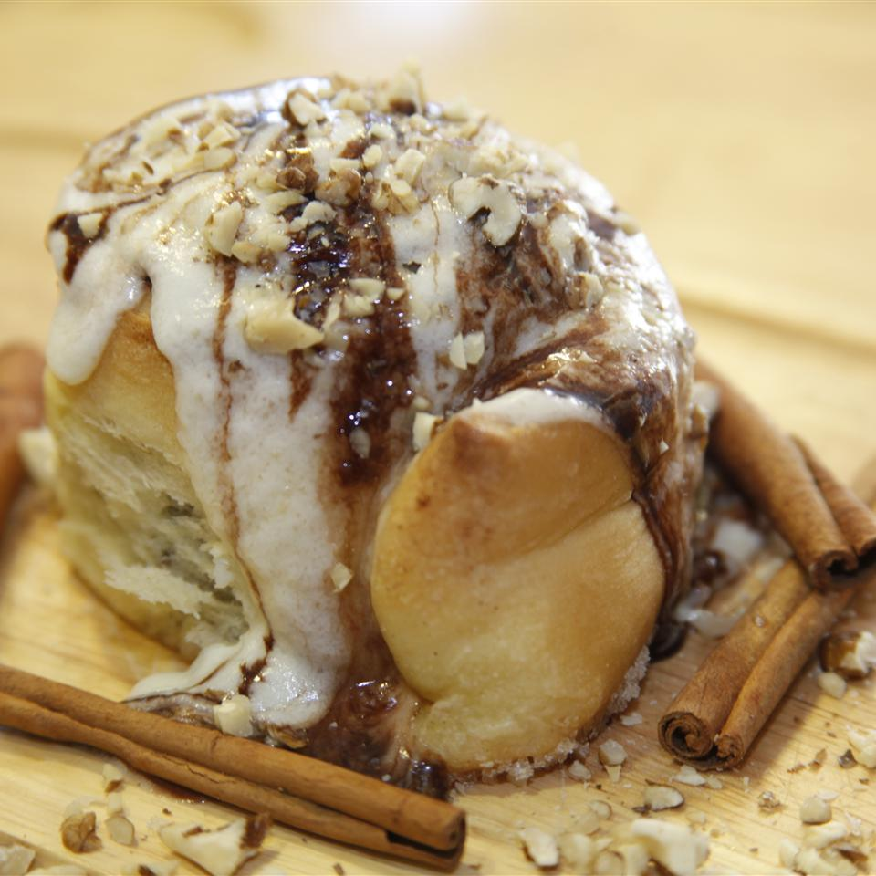

The Perfect Cinnamon Roll Icing

After testing many recipes for cinnamon rolls I found that just about any home-made roll can be good if you have
the
right icing. In too many recipes the cream cheese flavor overpowers the icing. Use this recipe for decadent
cream cheese
icing on your favorite cinnamon roll and you won't be disappointed!
Directions
- Step 1
Beat together the cream cheese and butter with an electric mixer in a large bowl until creamy. Mix in the vanilla
and
milk, then gradually mix in the confectioners' sugar and salt until smooth and fluffy.
Ingredients
- 2 ounces cream cheese, softened
- 7 tablespoons butter, softened/li>
- ½ teaspoon vanilla extract
- 2 tablespoons milk
- 1 ½ cups confectioners' sugar, sifted
- ¼ teaspoon salt
Odin Recipes